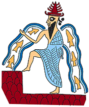

The Challenge -
Ea in the city of Eridu

A long time ago the gods decided to destroy humans because they were making too much noise. The gods agreed not to let humans know their plan. Ea, however, was god of wisdom and decided that this was a bad idea. Because he couldn't tell humans, he told a reed fence and a brick wall about the gods' plans, together with instructions for building a boat. A man called Uta-napishti was on the other side of the wall and heard what Ea said. Uta-napishti built a boat, loaded it with people and animals and precious objects. The flood came and destroyed humans except Ut-napishti and the other people with him. The gods realised they had made a mistake and, thanks to Ea, humans continued to exist.
|
|